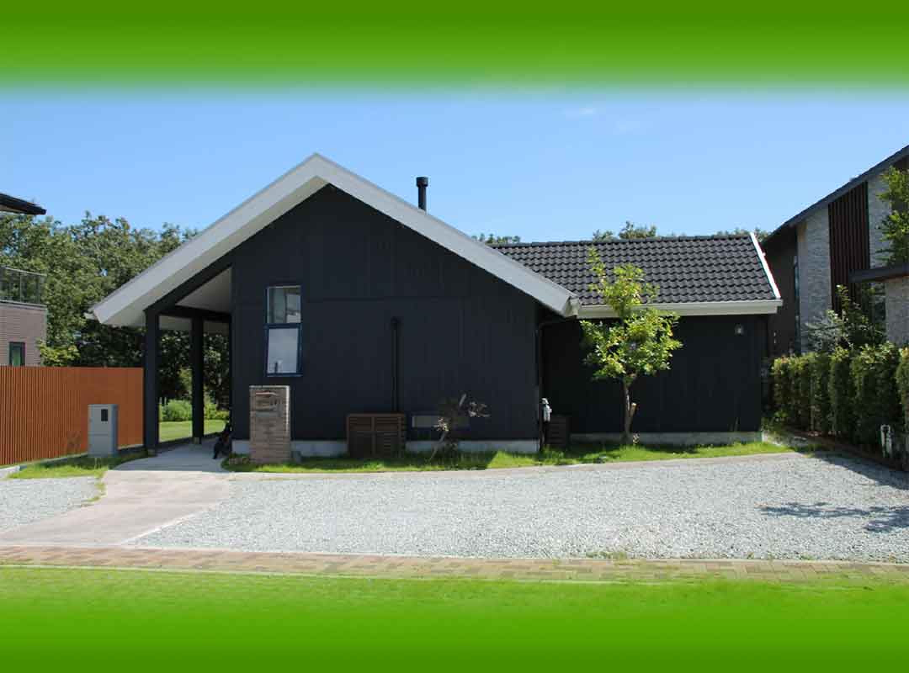

永遠も。瞬間も。
あなたと共に。

伝統とイマを繋ぐ
古来から伝わる伝統文化
昔からそこにある材料
その土地に長い間かけて
最適化してきた
たくさんのヒントを
イマを生きる私たちの
心地よさに取り入れ
新たな技術革新を
起こし続ける会社です
SERVICE
サービス

静岡県U.I様自宅
新築
（土地探し〜建築）
土地探しから建築、施工までサポートいたします。
風水的観点からもご提案。

北海道富良野市ブックカフェ
リフォーム
リノベーション
温かみと雰囲気をそのままに
住み心地、使い心地を
追求しご提供いたします。

広島県竹原市
都市計画〜開発
公共施設
都市計画から都市開発まで
ご提案いたします。
公共施設もさらに居心地良く。